Studio Rose Hallgren
Multidisciplinary architect and designer based in Stockholm, Sweden. Her work explores the intersection of traditional craft techniques and contemporary architectural practice, with a particular focus on weaving and ceramics as mediums for spatial design.
Rose is co-founder of Fanfaluca Collective , an architecture collective spanning Stockholm and Barcelona, and C.O.U.A. (The Collective of Unexpected Architecture), a studio for unexpected art and design. She is also part of Svartljus , a Stockholm-based lighting collective creating bespoke light sculptures and immersive experiences for museums, events, and festivals.
Her studio is at Åsögatan 122 in Stockholm, shared with Smash Studio and collaborator Jonas Johansson.
Fluffy Encounters


Folkbastu


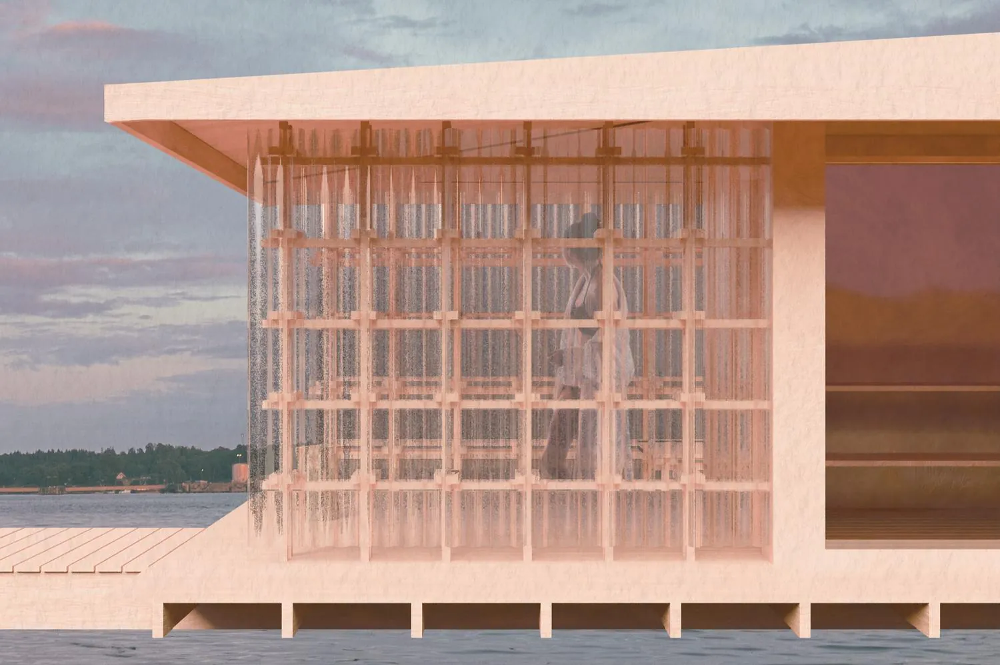

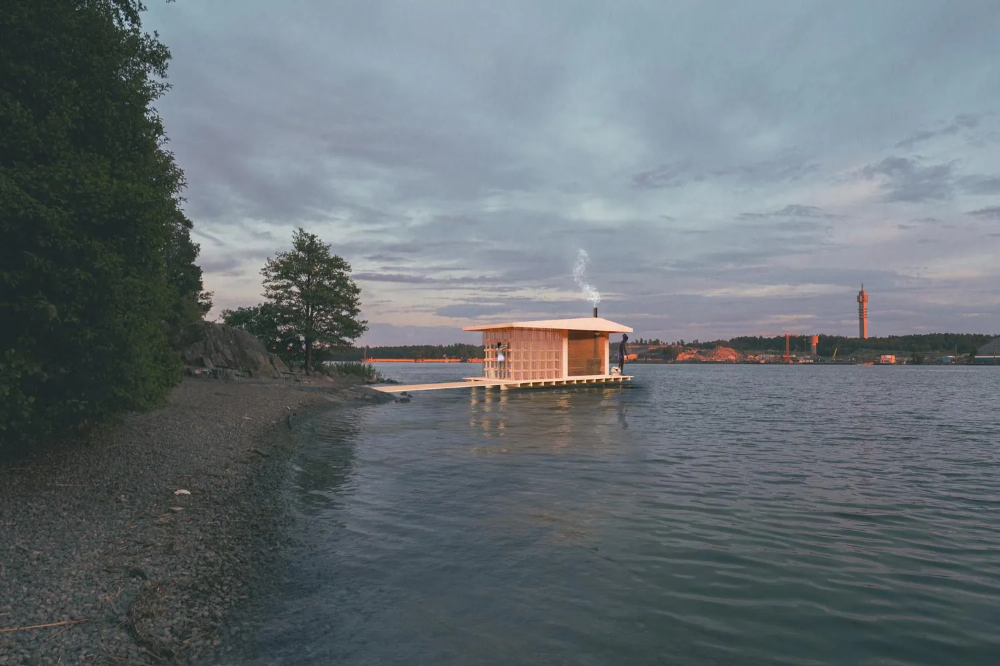

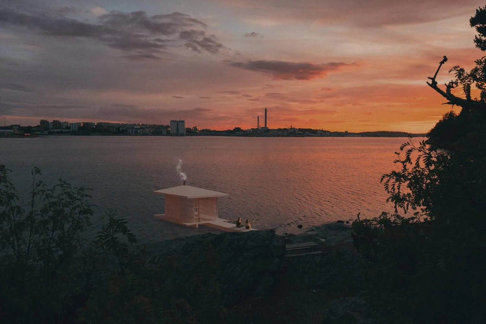

C.O.U.A.


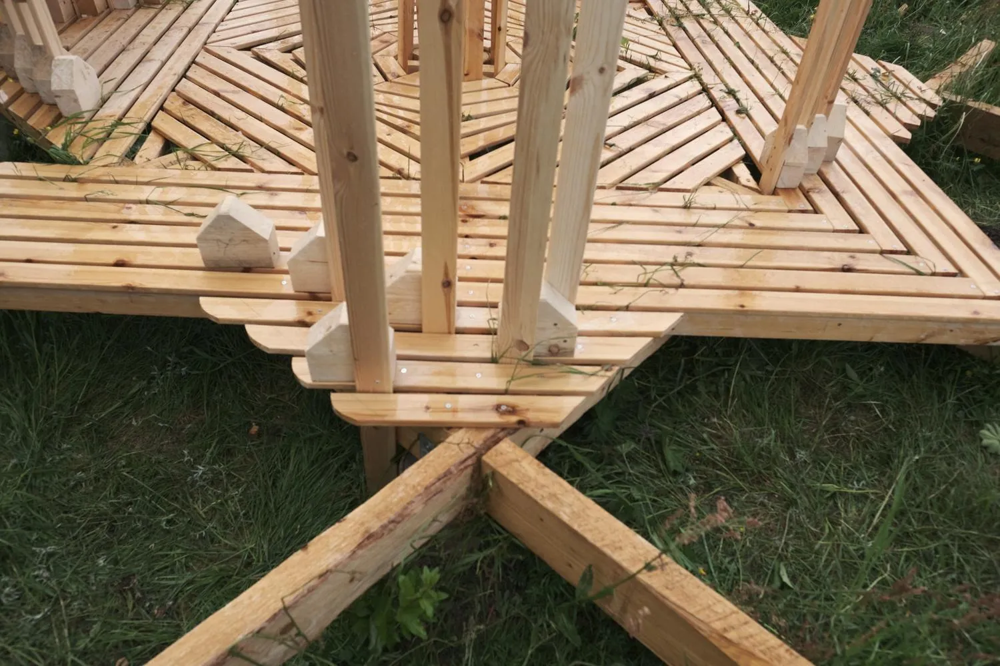


Tulip
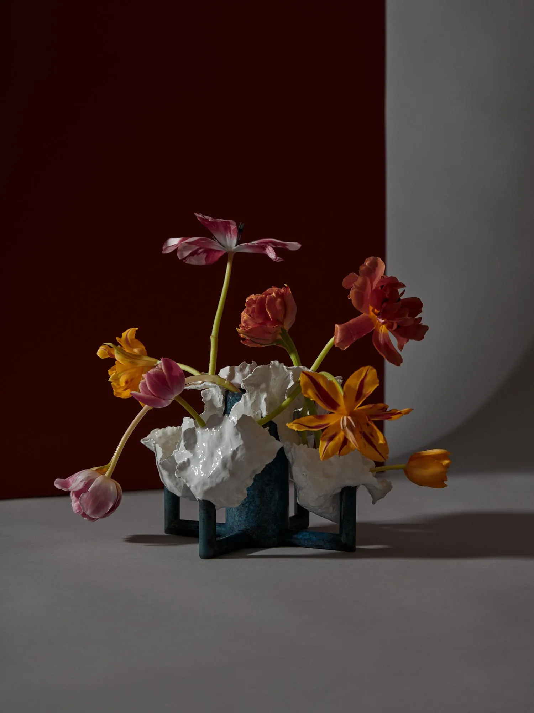

Drip Drop Non Stop


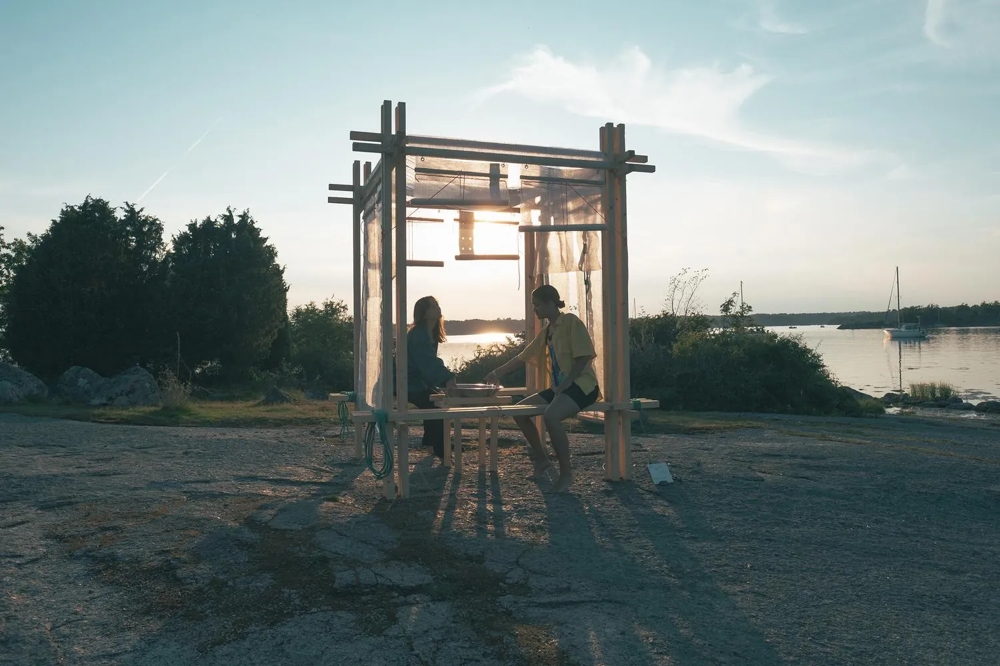


Drömmarens Malmö
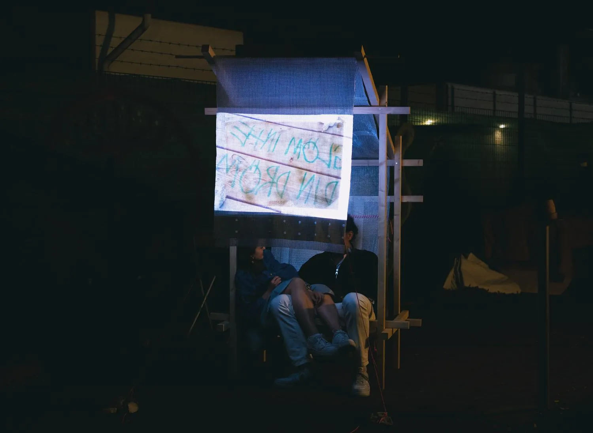


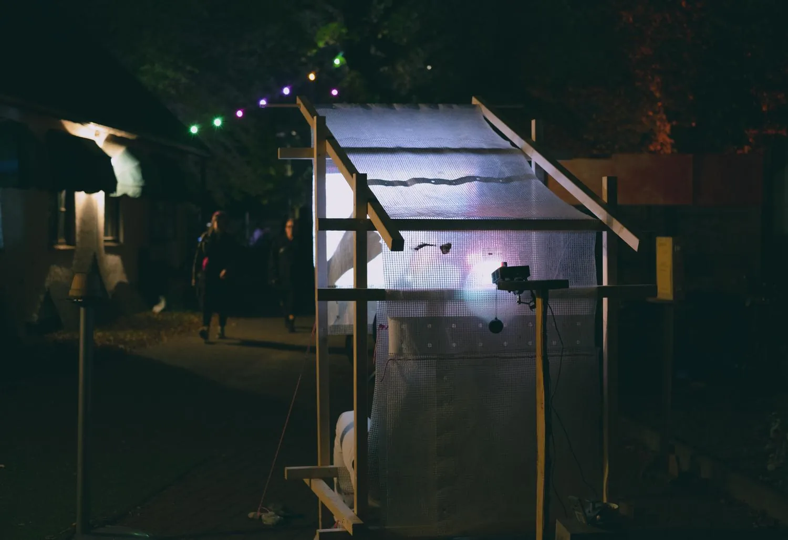

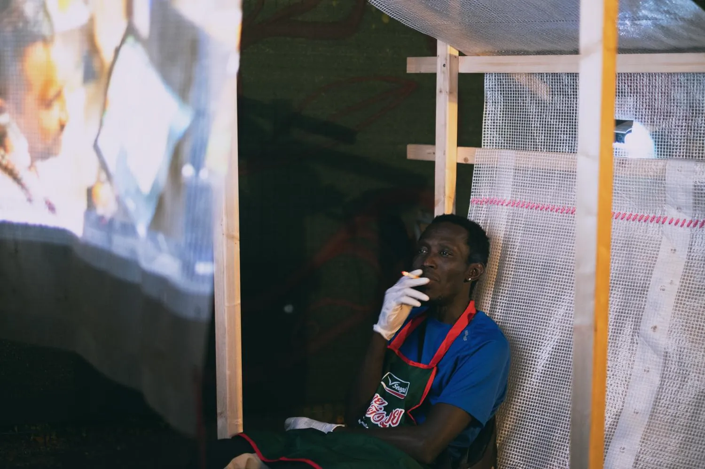

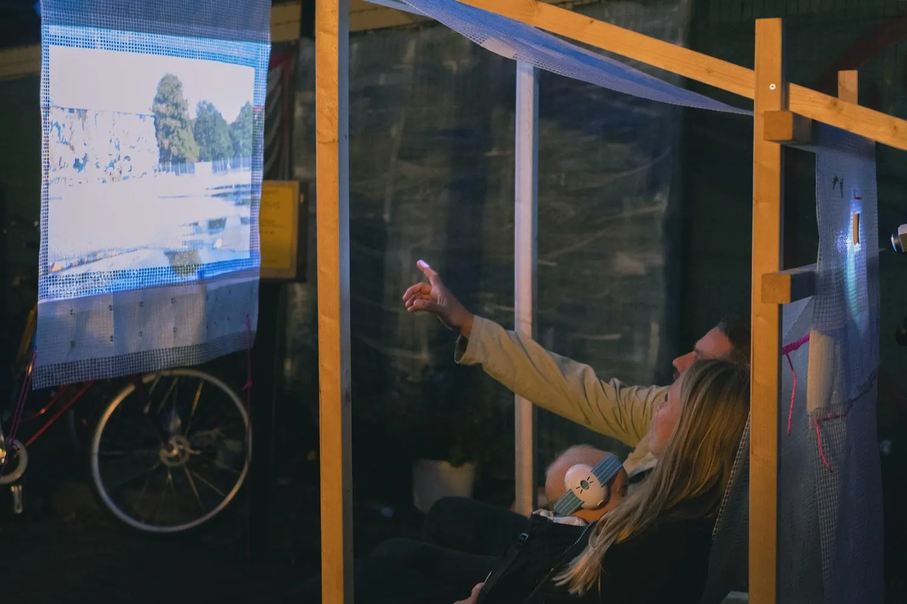

Photography
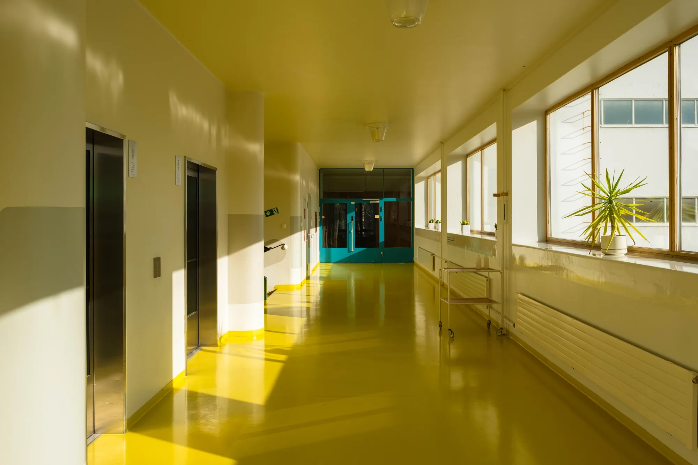


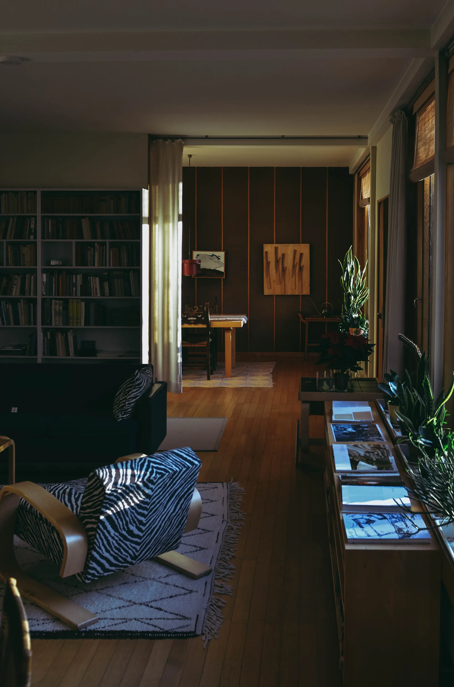


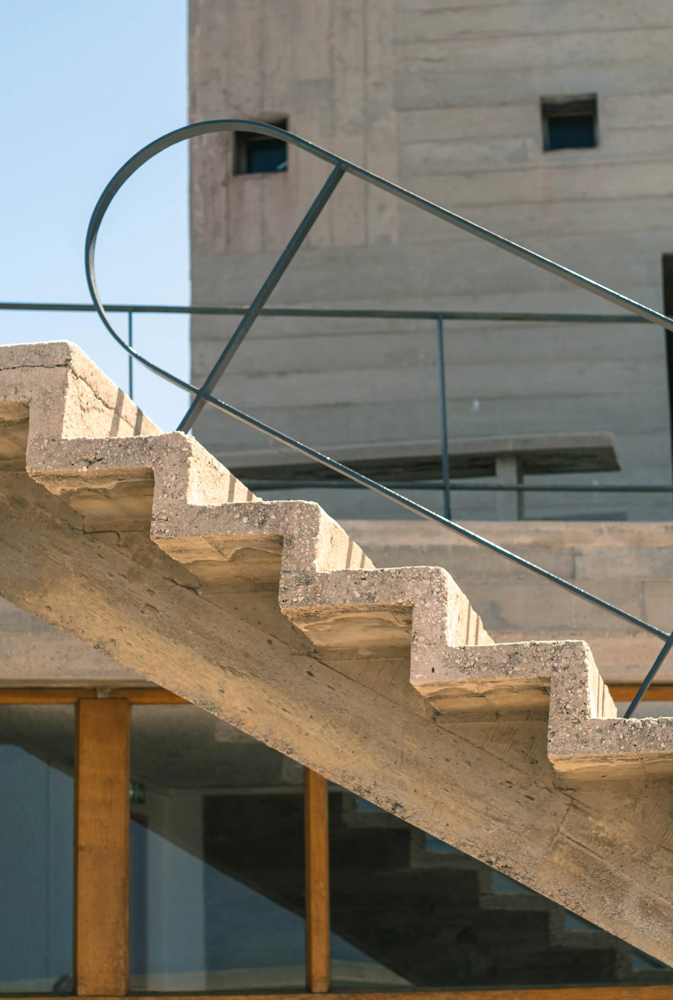


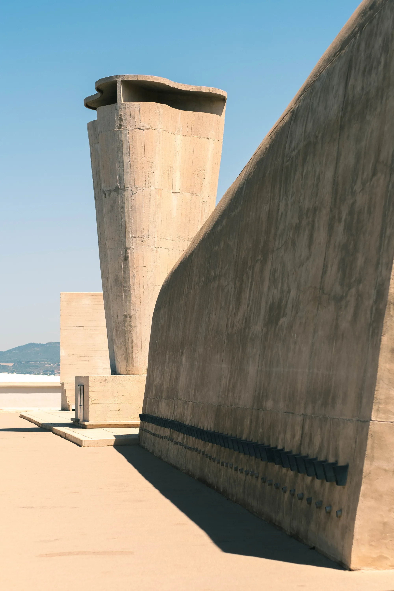